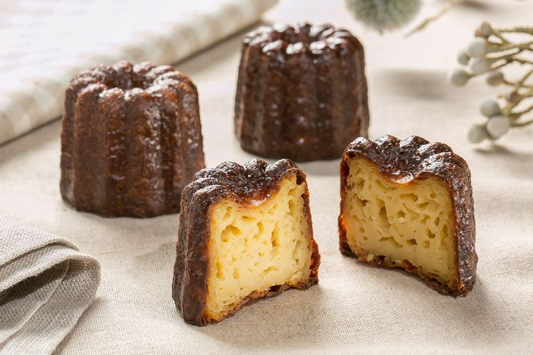

雪Q餅
準備材料：
無鹽奶油70g
棉花糖300g
全脂奶粉70g
蔓越莓果乾100g
奇福餅乾300g
製作步驟：
1. 用小火將奶油融化
2. 將棉花糖放入至融化並加入奶粉
3. 將蔓越莓果乾和奇福餅乾放入拌勻
4. 起鍋整形
5. 放置涼後切成小正方形即可
準備材料：
馬斯卡彭乳酪 500g
砂糖 50g
手指餅乾 巧克力餅乾(可可粉)
適量 牛奶 20-50ml
製作步驟：
1. 混合糖與馬斯卡彭乳酪打發至硬性發泡（依照混合物狀態添加適量牛奶）
2. 碾碎餅乾製作可可粉（有可可粉的可省略此步驟）
3. 將手指餅乾在容器內鋪滿鋪平
4. 塗上步驟1 製作的乳酪混合物
5. 灑上適量可可粉
6. 製作下一層與下下一層直到佔滿容器（每一層餅乾需交錯拼疊）
7. 放入冰箱冷凍
蛋黃 2顆
原味煉乳 80g
煉乳 80g
砂糖 10g
玉米粉 25g
水 100g
1.將蛋黃、原味煉乳、全能煉乳脂、砂糖、玉米粉及水放入攪拌盆中，攪拌均勻後過篩
2.倒入鍋中，以中小火加熱，並不停攪拌 ，煮至濃稠，倒入模具，放進冷藏3小時定型。
3.切小塊，在表面刷上薄薄一層蛋液後放進烤箱，以200度，烘烤約15-20分鐘。
550 ml 牛奶
50 g 無鹽奶油
220 g 砂糖
110 g 高筋麵粉
2 顆 全蛋
蛋黃 50 ml
1.牛奶、奶油、一起加熱至微滾，熄火後，稍微放涼至溫溫的溫度。
2.麵粉、糖、鹽攪拌均勻，加入全蛋、蛋黃拌勻，將全部食材倒在一起拌勻。
3.倒入模具，烤箱溫度約200度，進烤箱，烤45分，出爐。
